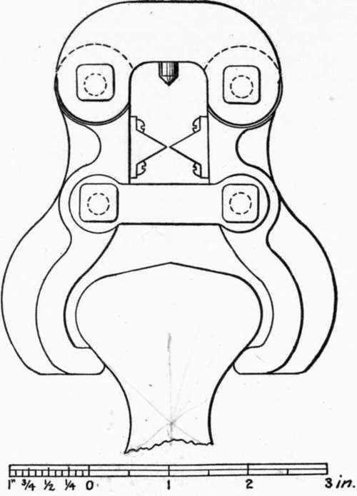

214. Conclusions Derived From Tests Of Several Styles Of Clips
Description
This section is from the book "Cement And Concrete", by Louis Carlton Sabin. Also available from Amazon: Cement and Concrete.
214. Conclusions Derived From Tests Of Several Styles Of Clips
From the tests described above,1 the following conclusions may be drawn: —
1st
When using the ordinary form of clips with metal gripping points, the briquets which break at the places of contact of the jaws give higher apparent strengths than those which break at the smaller sections.
2d
A rubber cushion between the briquet and the jaw of the clip prevents clip-breaks, but materially lowers the stress required to break the briquet.
3d
The form of clip designed by Mr. S. Bent Russell gives somewhat less irregular results than are obtained with the Riehle "Engineers' Standard" rigid clip. Although the results given by the Russell clip in its present form are a trifle lower than those given by the Riehle, it seems probable that these lower results are due to defects in detail which may readily be eliminated.
4th
By the application of the gimbal principle to cement testing clips, higher, as well as more nearly uniform, results may be obtained.
5th
In using the rigid form of clip, careless manipulation in adjusting the briquet may result in serious error due to the introduction of cross-strains, while with either the Single Gimbal or Russell clip slight deviations in adjustment are not important.
6th
With the form of briquet recommended by the committee of the American Society of Civil Engineers in 1885, the breaking stress may be somewhat increased, and the number of clipbreaks may be very materially decreased, by such a modification of the clip as to allow grasping the briquet nearer the head.
1 These tests were described in greater detail and discussed by the writer in "Municipal Engineering," Dec, 1896, Jan. and Feb., 1897.
215. Requirements For A Perfect Clip
As a logical result of these conclusions, the ideal clip should fulfill the following requirements: —
1st
It should impart a true axial pull to the briquet without subjecting it either to cross-strains or to compressive forces sufficient to cause it to break at other than the smallest section.
Fig. 9. form OF ARTICULATED CLIP SUGGESTED FOR USE.
2d
The bearing surfaces of the gripping points should not be more than about one-fourth of an inch wide, since this is sufficient to prevent crushing the briquet at these places, and too wide a jaw will not usually bear uniformly over its whole surface.
3d
Its parts should have sufficient strength and stiffness, so that they will not bend appreciably when in use.
4th
It should permit rapid operations, and:
5th
It should be as light as consistent with the above requirements.
216. Form Suggested
Fig. 9 shows a style of clip which closely conforms to the above specifications. The evener form devised by Mr. Russell has been selected for modification. The S. G. clip would more nearly meet some of the requirements, and, so far as the principle is concerned, this form is considered quite the equal of the evener clip. But no method of applying the gimbal principle has commended itself as affording such rapid manipulation as does the evener motion, and since it is thought that either form will obviate cross-strains in a plane parallel to the face of the briquet, the evener form has been adopted on account of convenience.
The defects in detail of the Russell clip which have already been mentioned have been obviated in the present form. The gripping points are made one-fourth of an inch wide, and a little more material has been used between the gripping points and the first pin to stiffen the clip. This form is designed for use with the briquet shown in Fig. 5 (see § 179).
217. Rate Of Applying The Tensile Stress
Table 37 gives the results of several hundred experiments made by Mr. Henry Faija 1 to show the effect on tensile strength of varying, the rate of applying the stress.
Table 37. Relation Of Apparent Tensile Strength To Rate Of Applying Stress
Rate of Applying Stress, Pounds per Minute. | Tensile Strength Obtained, Pounds per Sq. Inch. |
50 | 400 |
100 | 415 |
200 | 430 |
400 | 450 |
6,000 | 493 |
A few of the results obtained from nearly 900 tests, made under the author's direction to illustrate this point, are given in Table 38. Some of these results accord very well with those given in Table 37, but the results in the latter table were doubtless obtained from neat Portland briquets only, while the experiments given in Table 38 were made with briquets neat and with two parts sand, and on natural as well as Portland cement mortars.
1 "Cement for Users," by Mr. Henry Faija.
Table 38. Relation Of Apparent Tensile Strength To The Rate Of Applying The Stress
Cement. | Age of Briquets. | Tensile Strength, Pounds per Square Inch, for Stress Applied at Rate of Pounds per Minute. | |||||
100 | 300 | 500 | 700 | 900 | |||
Portland | Neat cement | 7 and 14 days | 453 | 485 | 521 | 520 | 528 |
" | Neat cement | 3 months | 590 | 617 | 622 | 640 | |
" | 1-2 | 3 months | 445 | 467 | 487 | 507 | 510 |
Natural | Neat cement | 7 days | 150 | 169 | 186 | 202 | |
" | Neat cement | 3 months | 309 | 351 | 363 | 378 | 390 |
" | 1-2 | 3 months | 255 | 299 | 327 | 329 | 354 |
218. It appears from all these results that the increase in the breaking strength due to increasing the rate of applying the stress is considerable in the case of low rates of speed, but when a rate of 500 or 600 pounds per minute has been reached, a further increase in rapidity does not make a material increase in the apparent strength. Since certain variations in rate are sure to occur, until some device is used to automatically regulate it, a rate should be adopted which would allow of slight variations without materially changing the result of the test. A rate of 600 pounds per minute would fulfill this requirement, and, with certain machines at least, would be still more convenient than the rate of 400 pounds per minute which has heretofore been quite generally used.
An analysis of the experiments made to determine the degree of uniformity obtained by using each of the given rates, showed there was but little difference in this regard, but if any choice could be made on this basis it seemed to lie with the more rapid rate.
219. With the shot machines it is not difficult to approximately regulate the rate at which the stress is applied. In operating a machine in which a handwheel moves a weight along the graduated beam, it must be remembered that the rate at which the weight moves is the controlling factor, and not the movement of the lower wheel, which simply serves to take up lost motion, the stretch of the briquet under strain, and the slipping of the briquet in the jaws of the clip. A mistaken idea concerning this matter has sometimes led to the adoption of a device to regulate the motion of this lower wheel. Until one is accustomed to applying the stress at a given uniform rate, he will find it an aid to hang near the machine a pendulum of such a length that a certain number of vibrations correspond to a complete revolution of the handwheel.
Continue to: